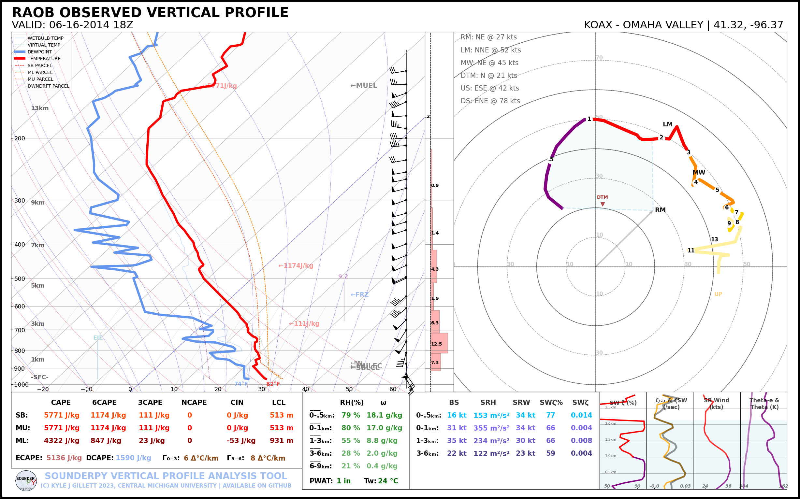

🎈 SounderPy
{kind=link}
SounderPy is an open-source atmospheric science Python package for vertical profile analysis. This tool is designed to get data, ‘clean it up’ for simple use, and plot the data on advanced-sounding plots. SounderPy was developed with the goal in mind to keep the code simple and efficient for users of all experience levels and for reliability in all use cases.
SounderPy has been used by several institutions. For example, this tool has been implemented by the Des Moines National Weather Service Office, the State University of New York at Albany, Mississippi State University, and others. Many have used SounderPy in projects and papers, such as students at Ohio State University, Central Michigan University & Rizal Technological University.
SounderPy is supported for Python >= 3.9.
Examples of SounderPy use are available on the 📝 Usage Examples page


Why SounderPy?
Sometimes data is tough to find, and often times it’s even tougher to get it in the format you like. SounderPy gets you this data!
The code needed for loading and parsing meteorological data, especially from models, can be large and messy. SounderPy keeps it hidden away in a PyPi package – just import and call sounderPy functions to keep your code clean!
SounderPy functions are designed to be simple and quick making for reliable use in research, forecast/analysis operations, and simply for fun!
What exactly can SounderPy do?
Retrieves vertical profile data
‘Cleans up’ the data for analysis
- Plots the data on advanced but easy to read sounding and hodograph plots.
See what kind of plots SounderPy can create here
What data can SounderPy work with?
DATA
TYPE
TIME RANGE
ECMWF CDS ERA5 reanalysis*
Reanalysis
1940-present
UNIDATA THREDDS TDS RAP
Reanalysis
2005-present
UNIDATA THREDDS TDS RUC
Reanalysis
2005-2020
UNIDATA THREDDS NCEP-FNL
Reanalysis
2005-2020
ISU’s BUFKIT archive
Model Forecast
2011-present
PSU’s BUFKIT feed
Model Forecast
Most recent runs
UNIDATA THREDDS TDS RAP
Model Analysis
Most recent run
OU ACARS Archive
Observations
2019-present
The Unv. of WY RAOB Archive
Observations
1973-present
IGRAv2 Observation archive
Observations
1905-present
☕ SounderPy is a open-source package developed on my own time. Would you like to support continued SounderPy development? Consider “Buying me a coffee”! ☕